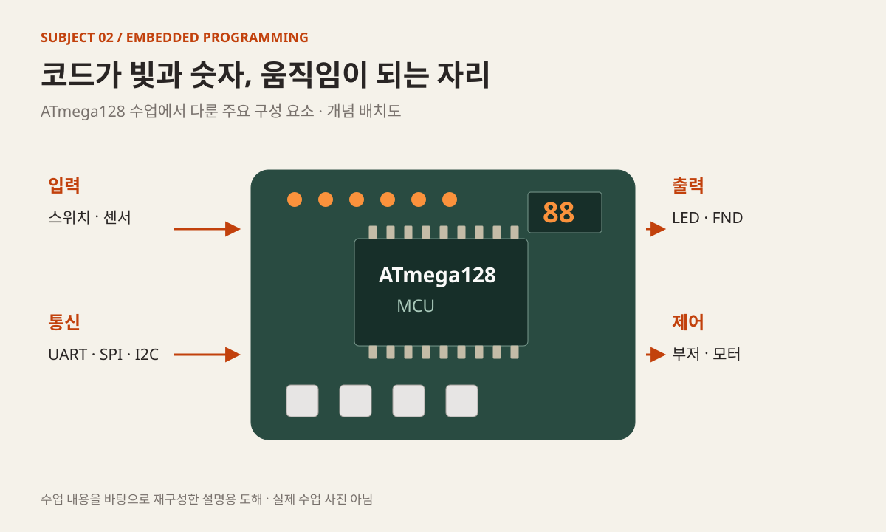
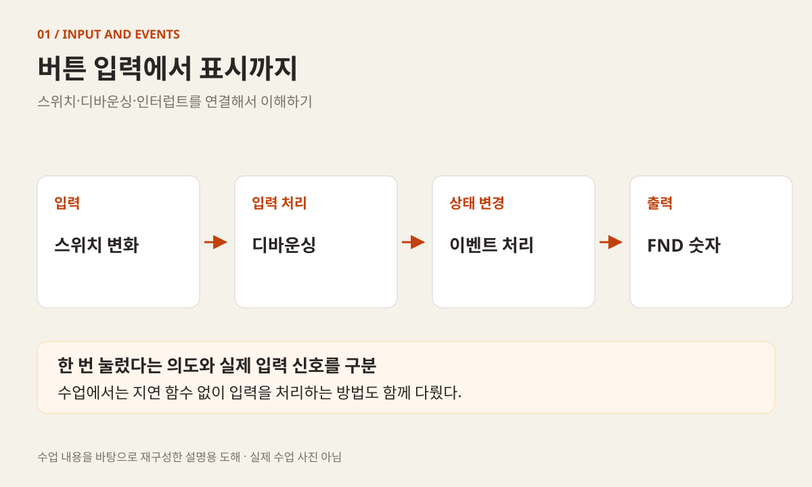
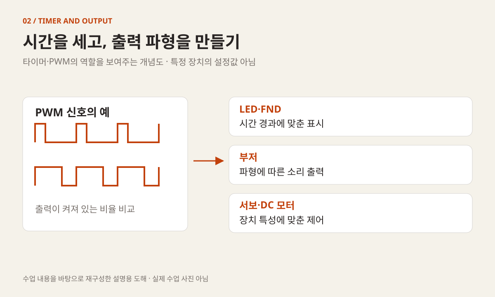
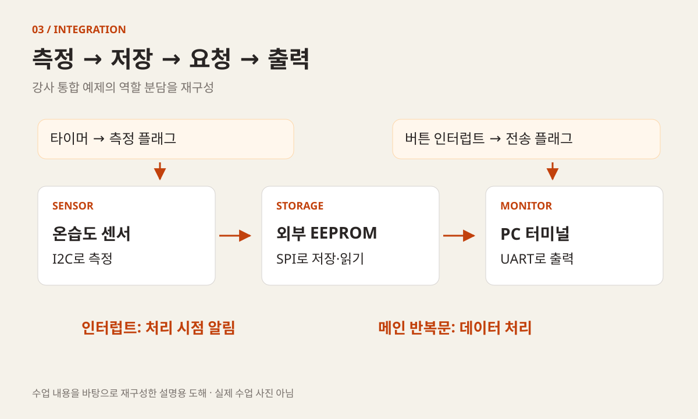

KOREA UNIVERSITY SEJONG / 2025 / SUBJECT 02
임베디드,
코드가 장치를
움직이는 5일
LED 한 개의 변화에서 센서 데이터를 저장하고 꺼내는 시스템까지.
ATmega128로 입력·출력·시간·통신을 연결한 수업.
빅데이터·IoT 소프트웨어 개발자 과정
C의 기본기를 실제 장치에 연결하다
2025년 3월부터 7월 15일까지 진행한 고려대 세종캠퍼스 장기 개발자 양성 과정의 두 번째 과목 기록입니다. 과정 전반을 감독하고 수업과 프로젝트를 지도한 경험 중, 이번에는 ATmega128 기반 임베디드 실습을 살펴봅니다.
- 교육 기관·형태
- 고려대학교 세종캠퍼스 · 오프라인
- 이 글의 수업 기간
- 3월 18–21일, 24일 · 수업일 5일
- 주요 환경·장치
- ATmega128 · PlatformIO · Ubuntu
LED · 스위치 · FND · 센서 · 모터 - 핵심 학습 내용
- 입출력 · 인터럽트 · UART · ADC
타이머 · PWM · SPI · I2C · EEPROM
MADAM 대표 활동 이전에 진행한 최수길의 교육 경험입니다. 강사 수업 기록, 강의계획서와 업무일지를 대조했으며, 3월 25일부터의 팀 프로젝트는 별도 범위로 구분했습니다.
입력은 스위치와 센서에서 들어오고, 결과는 빛·숫자·소리·움직임으로 나타났다. 장치를 하나씩 익힌 뒤 측정과 저장, 통신을 묶으며 시스템의 흐름을 읽었다.

03.18
C 코드가 보드의 입출력이 되기까지
C 프로그래밍 과목을 마친 다음 날, 수업의 실행 대상이 PC에서 ATmega128 보드로 바뀌었다. MCU의 역할과 구조를 살펴보고 PlatformIO를 설치한 뒤, PORTC 레지스터를 바꾸고 지연을 넣는 간단한 코드부터 작성했다. LED가 좌우로 반복해서 켜지는 동작으로 출력 결과를 눈으로 확인했다.
이어서 PINE 레지스터를 사용해 스위치 입력을 읽었다. 앞선 C 수업에서 다룬 조건문과 비트 연산을 하드웨어의 입력·출력에 연결하는 단계였다. 화면에 숫자를 출력하는 것과 달리, 보드에서는 핀의 역할과 입출력 방향도 함께 확인해야 했다.
첫날 운영 기록에는 USB 장치 접근 권한 문제와 udev 설정이 남아 있다. 일부 장치 인식 문제는 장치 변경으로 해결했다는 기록도 있다. 코드를 수정하기에 앞서 보드가 연결되어 있는지, 개발 환경에서 장치에 접근할 수 있는지를 확인하는 시간이 실제 수업에 포함됐다.
따라서 이날의 도달점은 LED 예제를 한 번 실행하는 것뿐 아니라, 소스 작성부터 빌드·업로드·동작 확인까지의 흐름을 경험하는 데 있었다. C 과목에서 만든 개발 습관을 보드 실습 환경에 옮기는 첫 수업이었다.
03.19
스위치 한 번과 이벤트 한 번은 다르다
19일에는 스위치 입력을 복습하며 채터링과 디바운싱을 다뤘다. 버튼을 눌렀을 때 입력을 어떻게 받아들일지, 지연 함수를 넣는 방식과 _delay_ms() 없이 처리하는 방식에서 무엇을 살펴야 할지 실습했다.
FND라고 부르는 7세그먼트 표시 장치를 연결해 버튼 입력에 따라 숫자가 바뀌도록 구성했다. 입력이 처리되는 방식은 표시 결과에 바로 드러난다. 스위치와 표시 장치를 따로 동작시키는 예제에서, 입력에 따라 출력 상태를 바꾸는 작은 시스템으로 범위를 넓혔다.
외부 인터럽트와 타이머 인터럽트, 인터럽트 벡터 테이블도 이날 소개했다. 입력을 확인하는 코드의 순서뿐 아니라 특정 사건이 발생했을 때 실행할 처리를 생각하는 시간이었다. 외부 인터럽트를 이용한 FND 과제를 통해 설명을 코드로 연결했다.
수업 후반에는 UART를 소개하고 PC에서 보드로 보낸 숫자를 FND에 표시하는 실습을 진행했다. uart0 라이브러리를 작성하고 적용하면서, PC 입력과 보드 출력이 하나의 통신 경로로 이어지기 시작했다.

03.20
UART로 상태를 읽고, ADC로 센서 값을 받기
20일에는 UART 관련 라이브러리를 작성·테스트하고, FDEV_SETUP_STREAM을 이용해 표준 입출력을 연결했다. C 과목에서 사용하던 입출력 개념을 MCU의 통신 경로에 연결해 보는 실습이었다.
스위치 정보를 PC로 보내고 PC의 문자열을 ATmega128에서 받는 실습을 진행했다. 수업 기록에 나오는 UART3는 해당 실습 파일의 표기다. 이를 보드에 세 번째 UART 주변장치가 있다는 뜻으로 설명하지 않고, 실제 예제 파일 ch8_3_uart3.c와 연결해 읽어야 한다.
같은 날 조도 센서를 활용한 ADC 실습과 출력도 진행했다. 스위치처럼 상태를 구분하는 입력에 더해, 센서에서 얻는 측정값을 프로그램이 다루는 데이터로 받아 보는 과정이었다. 이후 온습도 측정과 기록으로 확장할 기반을 마련했다.
운영 기록에는 PC와 MCU 사이의 문자열 송수신 문제를 해결한 내용이 있다. LED의 동작만 관찰하던 단계에서 통신으로 내부 상태를 확인하는 단계로 넘어가며, 실습 결과를 확인하는 방법도 넓어졌다.
03.20–03.21
타이머와 PWM으로 시간과 출력을 다루기
20일 후반에는 timer0와 timer2 설정을 비교하고 PWM 구현으로 이어 갔다. 두 타이머의 제어 레지스터 설정이 다르다는 점을 수업에서 직접 비교했다는 기록이 남아 있다. 비슷한 이름의 주변장치라도 설정값을 그대로 옮기기 전에 차이를 확인해야 하는 사례였다.
21일에는 16비트 timer1과 timer3의 오버플로우·비교 인터럽트를 이용해 LED와 FND를 제어했다. 버튼을 누른 시간을 표시하고 숫자를 증가·감소시키는 실습을 통해, 일정 시간의 경과와 외부 입력을 함께 처리했다.
PWM 부저 실습에서는 도레미 출력과 OC 핀 설정을 다뤘다. 이어 ch7_3_buzzerapp 예제에서 버튼·부저·FND를 연결했다. 강사 예제는 버튼에 대응하는 소리를 내고 번호를 표시한 뒤 출력을 멈추는 구조다. 하나의 입력이 소리와 표시라는 두 출력으로 연결된다.
수업 말미에는 서보 PWM 제어도 진행했다. LED, 부저, 서보처럼 서로 다른 출력 장치를 다루면서 타이머와 출력 설정이 실제 동작으로 이어지는 관계를 반복해서 살펴보았다. 각 장치의 실습을 모두 같은 종류의 제어로 단순화하지 않고, 설정과 결과를 함께 읽는 과정이었다.

03.24
모터·통신·메모리를 하나의 흐름으로
주말 뒤 24일에는 DC 모터 제어와 PWM 실습으로 시작했다. 이후 동기·비동기, 전이중·반이중 등 통신을 구분하는 관점을 설명하고 SPI와 외부 EEPROM 실습을 진행했다. flash·SRAM·EEPROM의 종류와 내부 EEPROM도 함께 다뤘다.
I2C 통신에서는 SHT20 온습도 센서를 연결하고 관련 라이브러리를 살펴보았다. 강의계획서의 i2c_tempHumi 예제는 강사 저장소의 ch10_3_i2c_tempHumi.c에서 확인할 수 있다. 보관된 코드는 센서를 읽고 계산한 온습도 값을 LCD에 표시하는 구조를 담고 있다.
최종 예제는 온습도 센서, EEPROM, UART, 인터럽트를 연결했다. 개별 기능을 따로 실행하던 실습에서 측정한 값을 저장하고 필요할 때 읽어 출력하는 흐름으로 넘어갔다. 타이머와 입력 이벤트가 처리 시점을 정하고, 통신과 메모리가 데이터를 전달·보관하는 역할을 나누었다.
24일의 기록에는 교재 복습과 시험도 포함되어 있다. 이 글에서 말하는 5일은 순수 강의 시간만의 합계가 아니라 환경 설정·실습·복습·평가를 포함한 수업일 기준이다. 개인별 점수나 숙련도는 공개하지 않는다.
통합 실습
측정 → 저장 → 요청 → 출력
ch10_4_eeprom_temp.c는 여러 주변장치를 연결한 수업 예제의 구조를 살펴볼 수 있는 자료다. 코드에서는 타이머 인터럽트가 측정 플래그를 설정하고, 메인 반복문이 센서 값을 읽어 EEPROM에 기록한다. 외부 인터럽트가 전송 플래그를 설정하면 저장한 값을 읽어 UART로 출력한다.
이 흐름을 읽을 때에는 “언제 처리하는가”와 “무엇을 처리하는가”를 나누어 볼 수 있다. 플래그를 설정하는 부분과 실제 데이터 처리 부분, 센서를 읽는 통신과 저장 장치에 쓰는 통신을 구분하면서 전체 시스템의 역할을 파악하는 것이다.
강사 저장소의 코드는 당시 실습을 이해하기 위한 참고 자료다. 이 글에서 실제 보드의 측정 주기나 통신 안정성을 새로 검증한 것은 아니며, 주석에 적힌 목표를 측정된 성능으로 제시하지 않는다. 확인 가능한 코드 구조와 당시 운영 기록의 범위에서 실습을 설명했다.

수업 운영과 다음 단계
개별 장치 실습에서 팀 설계로
5일 동안의 흐름은 LED와 스위치, 표시 장치, UART, 센서, 타이머·PWM, 저장 장치의 순서로 확장됐다. 각 기능이 어디에서 입력을 받고 어떤 상태를 바꾸는지 확인한 뒤, 여러 기능을 묶는 예제로 연결했다.
운영 측면에서는 USB 접근 권한과 장치 인식, UART 입출력, 타이머 설정 차이를 짚는 시간이 필요했다. 주간 기록에는 UART·타이머·인터럽트의 반복 학습 요청도 남아 있다. 이후 실습에서도 다시 사용할 개념을 당일 예제로 끝내지 않고 점검해야 했음을 보여 준다.
3월 25일부터는 팀별 주제 선정과 설계, 코드 작성, Jira를 통한 프로젝트 관리로 넘어갔다. 이번 과목에서 다룬 장치를 어떤 문제에 사용할지 팀이 결정하는 단계였다. 팀 프로젝트의 구현 과정과 결과는 별도 글에서 다루며, 이 포스트는 3월 18~24일의 임베디드 수업을 기록한다.
참조 자료와 기록 범위
- 1. 강사 수업 기록 · ATmega128 ↗
3월 18–24일 수업 일정·내용의 기본 자료. - 2. UART 송수신 실습 ↗
수업 기록의 UART3 실습에 대응하는 예제 파일. - 3. 버튼·부저·FND 통합 예제 ↗
버튼 입력을 소리와 표시로 연결하는 예제 구조. - 4. 온습도 측정·표시 예제 ↗
센서 측정과 LCD 표시를 연결한 코드. - 5. 센서·EEPROM·UART 통합 예제 ↗
인터럽트 플래그와 메인 반복문을 이용한 측정·저장·출력 구조.
모든 공개 참조는 동일한 저장소 리비전에 고정했습니다. 운영 내용은 「임베디드 과정 강의계획서」(2025.03.18), 「주간 업무일지」(2025.03.21·03.28)와 대조했습니다. 내부 원본과 개인별 평가 자료는 공개 첨부하지 않았습니다.
교육생을 식별할 수 있는 이름·계정·연락처·얼굴 사진·개별 제출물 링크는 수록하지 않았습니다. 수업 예제의 코드는 구조를 설명하는 자료로 사용했으며 실제 하드웨어 성능을 재검증한 결과로 제시하지 않습니다.